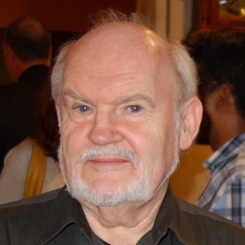
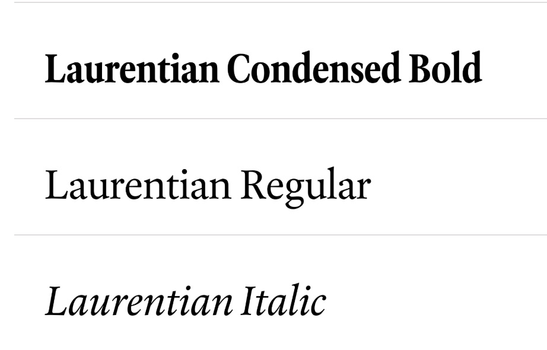
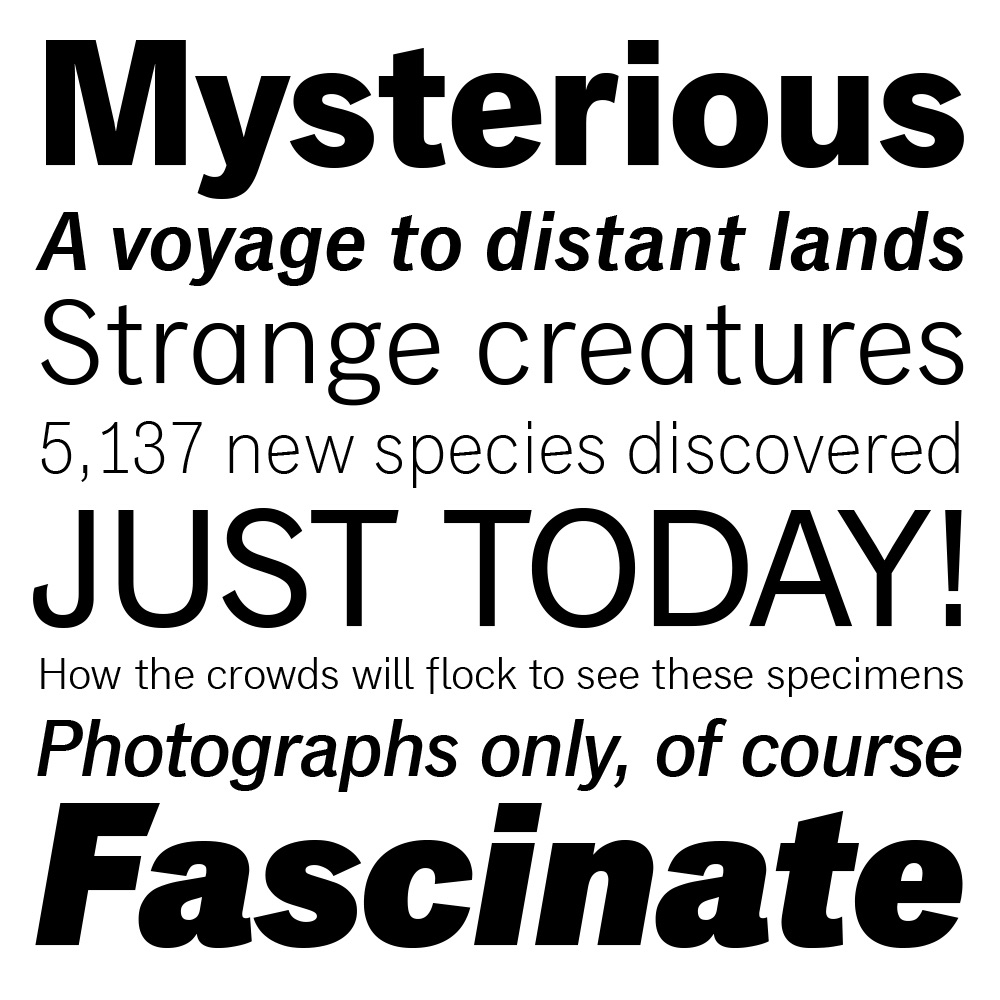
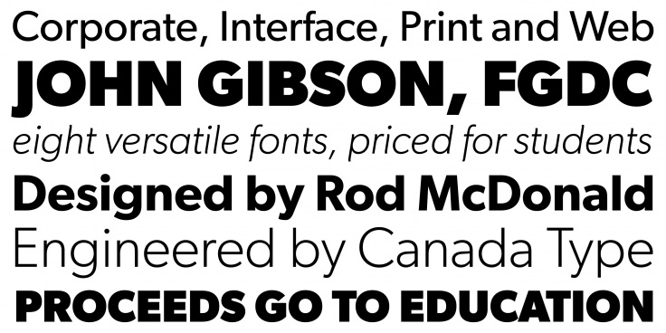

Rod McDonald is a Canadian type designer known for blending historical and modern typography. With decades of experience, he has contributed to type design, education, and preserving typographic heritage.
He has worked with Sheridan College and now lives in Nova Scotia as far as I know. One of his major achievements is Classic Grotesque, a typeface that reflects his passion for classic and contemporary design. I will discuss that later. This research explores his influence, major contributions, impact on typography, and analyzes his typefaces and typographic compositions.
Rod McDonald, born near Prince Albert, Saskatchewan, started as a lettering artist in the 1970s. Over the years, he became a designer, educator, historian, and writer, deeply involved in typography. He has taught at OCAD University and NSCAD University in Halifax. In 2012, he was named a Fellow of the Society of GDC (Graphic Designers of Canada), highlighting his impact on the design community. His work spans many areas of typography, from type design to education and historical preservation.
Rod McDonald's influence in typography comes from his skill at blending historical principles with modern design needs. His revival of Cartier, Canada’s first Latin typeface originally by Carl Dair in 1967, into Cartier Book™ (2000), highlights his dedication to preserving typographic heritage. This update solved past design problems, creating a distinctive and readable type family.
Additionally, his creation of Laurentian™ (2001) for Maclean’s magazine marked Canada’s first custom magazine typeface. This significantly improved the magazine’s visual identity and showcased McDonald’s talent for designing typefaces tailored specifically to editorial purposes.

I think Rod McDonald’s most important contribution to typography is the creation of the typeface Classic Grotesque, the font released in 2012. This typeface shows his talent for merging historical influences with modern needs. Classic Grotesque was inspired by early 20th-century sans-serif styles but updated for readability, flexibility, and contemporary digital standards.
By refining letter forms and spacing, McDonald honored the past while offering a fresh design suited for screen and various media.
Its defining qualities include neat lines, balanced proportions, and exceptional versatility, making it ideal for everything from branding to editorial layouts. Each weight is crafted for clarity at any size, ensuring that Classic Grotesque remains legible in both print and digital settings and improves readability. Because of these characteristics, this typeface has earned widespread praise among designers seeking a timeless yet adaptable font. Classic Grotesque’s balanced forms reflect McDonald’s deep respect for tradition, while its crisp finish addresses current visual needs.
Classic Grotesque has generated renewed interest in classic grotesque type families, prompting other designers to explore and update older styles. Its clean, welcoming appearance fits diverse applications, from corporate materials to web interfaces. By reviving historical shapes and refining them for modern usage, McDonald proved that established forms can thrive in today’s fast-paced design world. He demonstrated how paying close attention to spacing and form can create a seamless reading experience. As a result, Classic Grotesque remains a testament to his skill in preserving tradition while embracing forward-looking design principles.

Beyond designing typefaces, Rod McDonald has had a major impact on education and mentorship in typography. His teaching at Sheridan College and NSCAD University has helped many young designers develop a deep understanding of typography. McDonald focuses on both technical skills and the history of type, ensuring that students appreciate the craftsmanship behind letterforms.
Through workshops, lectures, and articles, he has shared his expertise with both students and professionals. His ability to connect historical knowledge with modern design makes him a respected figure in the field. Many of his former students have gone on to work in graphic design, branding, and type design, applying the principles they learned from him. By educating the next generation, McDonald has ensured the continued growth and refinement of typography.
McDonald is not just a designer and educator—he is also an advocate for typographic excellence. He actively participates in typographic organizations such as the Society of GDC (Graphic Designers of Canada), helping to promote high standards in type design.
His writings in publications like Applied Arts magazine explore the evolution of typography, best design practices, and historical influences. By discussing both technical and aesthetic aspects of type, his work has shaped how typography is viewed in Canada and internationally.
Through his research and public speaking, McDonald has encouraged designers to approach typography with care and precision. His advocacy ensures that typography remains a key element in visual communication and design education.
The Gibson™ typeface was designed by Canadian type designer Rod McDonald and released in 2011. McDonald developed this typeface as a tribute to Canadian designer and typographer John Gibson. Commissioned by the Society of Graphic Designers of Canada (GDC), Gibson™ aimed to provide a practical, readable typeface suitable for both print and digital applications. One of the main objectives behind creating Gibson™ was to offer an affordable, versatile, and accessible typeface specifically for Canadian designers and organizations. Additionally, Gibson™ was created to support graphic designers who needed a clear, professional typeface that could perform consistently across multiple media, from websites and apps to print publications and branding materials (Canada Type, 2011).

Gibson™ is characterized by its clean, modern, and highly functional letterforms. It is a humanist sans-serif, combining traditional elements of readability with contemporary style. The typeface includes various weights from Light to Bold, with matching italics, ensuring a range of choices for diverse design situations. Key features of Gibson™ include open letterforms, balanced proportions, and subtle curves, providing an approachable yet professional appearance. Its structure makes it highly readable, especially at smaller sizes, which is ideal for digital screens and printed texts. The balanced proportions also give Gibson™ a clean, timeless aesthetic, making it a versatile option for multiple design contexts (Fonts.com, 2012).
Since its release, Gibson™ has become highly popular in the Canadian design community and internationally, widely adopted in corporate identities, branding, websites, and editorial design. Its versatility and readability have made it a preferred choice for designers seeking a reliable, contemporary typeface. Gibson™ successfully combines traditional typographic principles with modern design practices, helping to set a new standard for usability and clarity in typography. Its widespread adoption underscores McDonald's impact and reinforces his legacy in typeface design (Canada Type, 2011).
Classic Grotesque was designed by Rod McDonald and released in 2012. This typeface was inspired by traditional grotesque typefaces popular in the early 20th century, especially famous fonts like Akzidenz-Grotesk (1896) and Monotype Grotesque (1926). McDonald’s goal was to create a new version of these historical designs, making them clearer, cleaner, and easier to read, while still retaining their classic appeal (Linotype, 2012).
When developing Classic Grotesque, McDonald focused on fixing small issues from older grotesque typefaces, such as uneven letters and inconsistent spacing. By improving legibility and balancing each character, he made sure Classic Grotesque would work well in modern designs across both print and digital media. This careful redesign maintains the original charm but provides a more polished and versatile typeface suitable for contemporary use (Linotype, 2012).
Classic Grotesque quickly became popular in various design fields. Its clear, readable style has made it a favored choice for corporate branding, magazines, books, websites, and apps. Its timeless appearance and readability ensure that Classic Grotesque remains relevant across different media platforms, proving McDonald’s skill in bridging historical design with modern needs.
Rod McDonald’s contributions to typography extend far beyond individual typefaces. He has bridged historical and modern typographic practices, making him one of the most influential Canadian type designers. His work on Classic Grotesque, Laurentian™, and Cartier Book™ showcases his ability to revive, refine, and innovate type design, ensuring typography remains both historically grounded and future-ready.
Beyond type design, his educational influence, advocacy for typographic excellence, and contributions to Canadian design history have solidified his legacy. His meticulous approach to typography continues to inspire contemporary designers to focus on both aesthetic and functional aspects of type.
As digital and print media evolve, McDonald’s typefaces remain highly relevant, proving that well-designed typography transcends time and technology.